5. Desplegar la App y Pipelines
5.1 Desplegar la app y las pipeline RAG, RAGas
¡Es hora de unir todas las piezas en la app! Esta app consistirá en una ventana de chat con el agente que hemos creado. Se trata de un front-end que nos permite ajustar parámetros del modelo y experimentar con el comportamiento del agente.
Vamos a volver a la pestaña del IDE. Escribe en el terminal el siguiente comando para actualizar nuestra arquitectura:
helm upgrade llama-stack-demo helm/ -f helm/values-app.yaml --set assigned=llama-stack-demo-%USERNAME% --namespace llama-stack-demo-%USERNAME% --timeout 20mVuelve a la ventana de Openshift para verificar que los cambios se han ejecutado. Deberías estar en la sección Workloads>Topology.
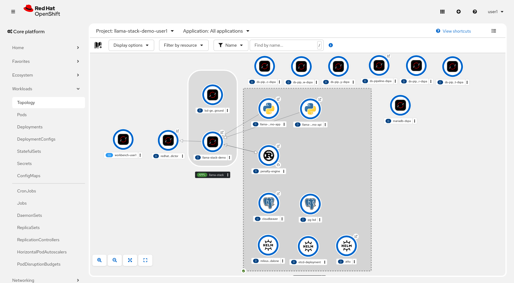
¿Qué ha cambiado? Vamos a echarle un ojo a la topología. Recuerda que tus despliegues seguramente se hayan colocado de otra manera:
-
Con el logo de Python, tenemos dos deployments dedicados a la app agéntica que hace llamadas a Llama Stack.
-
Encima, tenemos una fila de deployments de pipelines.
5.2 Pipeline de RAG
En este caso, hemos desplegado unas pipelines que se encargan de automatizar la ingestión de archivos para hacer RAG.
Disponemos de unos documentos legales ficticios para que el agente tenga un contexto en el que usar sus herramientas. En la ventana de nuestro entorno de desarrollo, puedes visualizar los documentos en la ruta llama-stack-demo/client/docs/.
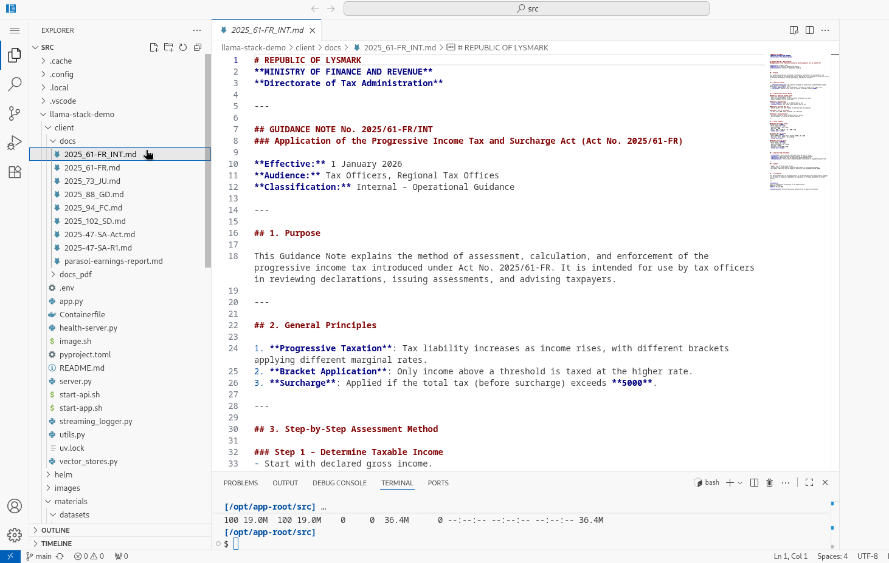
La pipeline RAG coge estos documentos, los trocea y guarda en la base de datos vectorial (PostgreSQL y Milvus). Luego gracias a un modelo de embedding que incluye Llama Stack, podemos realizar la búsqueda y retrieval de la información procesada.
Vamos a ver el desarrollo de esta pipeline desde Openshift AI. Dirígete a la pestaña de OpenShift AI a Develop & train > Experiments:

Clica en rag-pipeline-experiment.
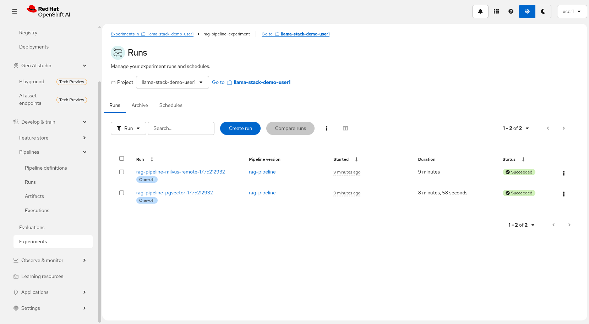
Ahora vamos a seleccionar la pipeline de rag-pipeline-milvus-remote:
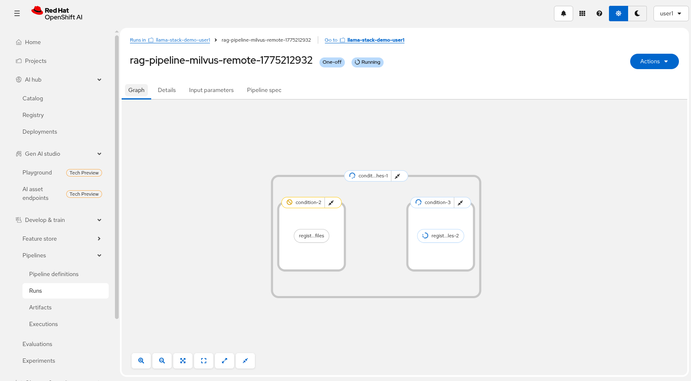
Deberías ver a la pipeline en pleno procesamiento. Tardará unos minutos en terminar, ¡así que mientras continúa con el taller!
5.3 Pipeline de RAGas
Por otro lado, hemos creado unas pipelines RAGas. Estas nos permiten hacer pruebas y comprobar la precisión de nuestro RAG pasandole a nuestro modelo una batería de tests.
Vamos a ver los datasets que hemos pasado a la pipeline de RAGas. Vuelve al entorno de desarrollo y ve a la carpeta llama-stack-demo/materials/datasets:
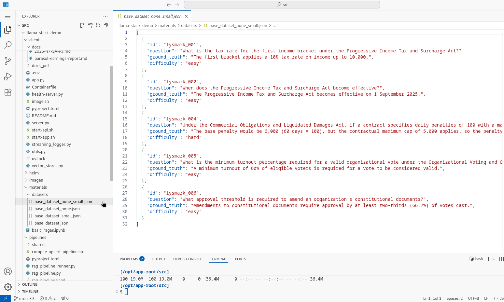
Volvemos a la pestaña de experimentos de OpenShift AI y esta vez clicamos en la pipeline de RAGas:
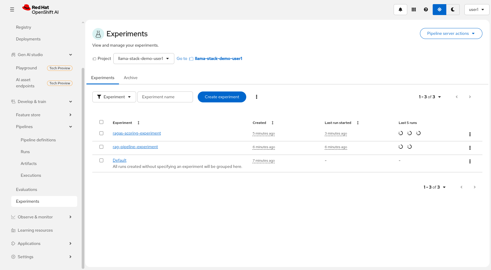
Aquí encontrarás varias pipelines en proceso. Nuestro sistema de RAGas está configurado para lanzarse cada cierto tiempo para enseñar que podemos configurar pipelines recurrentes.
Puede que la primera ejecución de estas haya dado error al depender de que acabaran las pipelines de RAG antes. No te preocupes, en la segunda ejecución no debería haber problema.
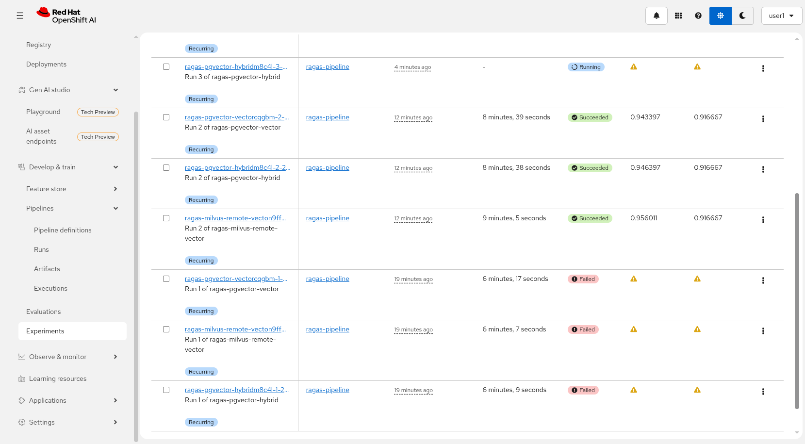
Vamos a mirar la segunda ejecución del RAGas de ragas-milvus-remote-vector, que debería estar en proceso:
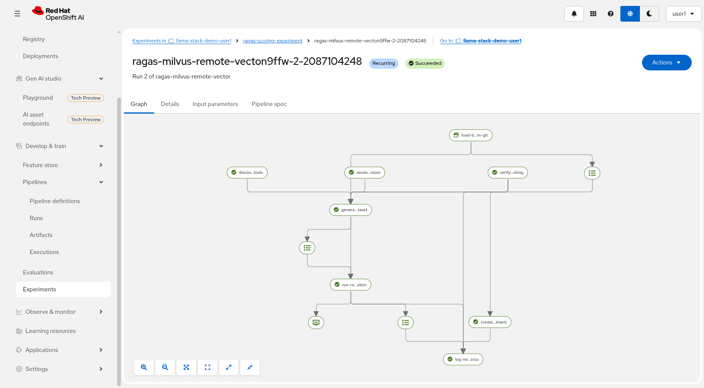
Aquí se ven los pasos del RAGas e incluso puedes ver los logs de cada paso. Una vez que esté verdes, podremos volver a la página anterior:
Cuando ya las pipelines de RAGas se encuentren en el estado Succeded, vamos a fijarnos en los dos números a la derecha de cada fila:
-
El primer número es el answer_relevancy evalúa la calidad del buscador y mide qué tan relevante es el contenido que recuperamos de la base de datos respecto a nuestro dataset.
-
El segundo context_precision nos habla de la calidad de la respuesta del LLM. Mide qué tan bien responde al output del modelo a la intención original de la pregunta.
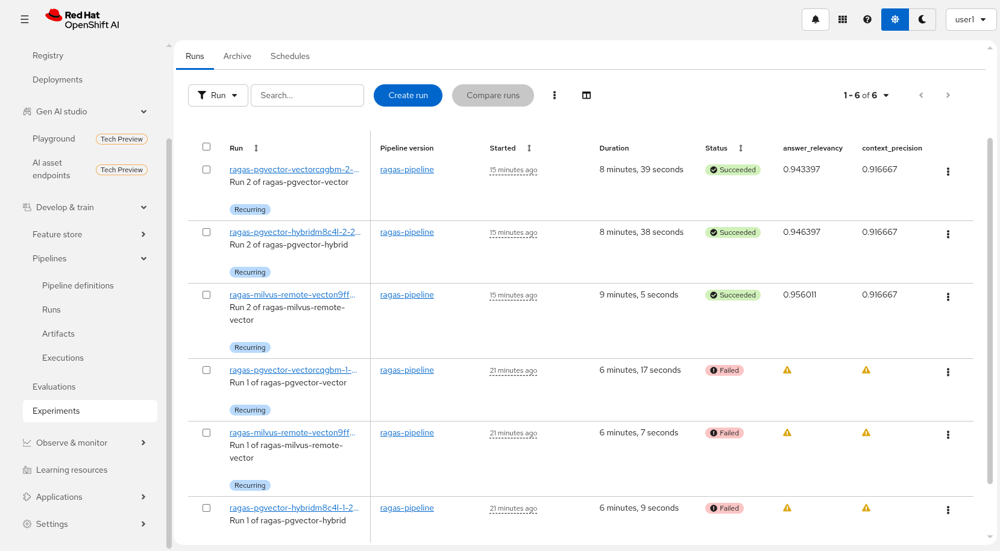
Cuando hayas visto terminar la pipeline de RAGas y visto los resultados, podemos pasar a ver la app.
5.4 Probar la App
Vamos a la pestaña de Openshift a ver la topología Workloads > Topology. Verifica que en el desplegable de arriba estás en el proyecto llama-stack-demo-%USERNAME% Esta vez vamos a clicar en el Deployment llama-stack-demo-app, con el icono azul y amarillo de Python. Luego clica en la ruta que aparece en el panel de la derecha.
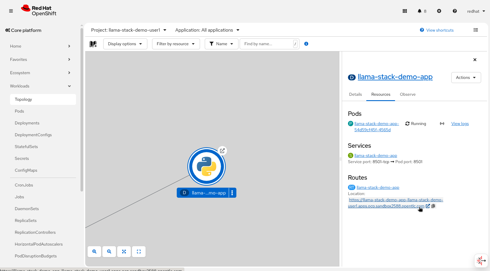
Se abrirá otra pestaña en la que accedemos a la app. Vamos a configurar el chat desde el panel del lado izquierdo tal como aparece en la siguiente imagen.
En Vector Store, selecciona rag-store-milvus-remote. En caso de que no aparezcan opciones, espera unos minutos y vuelve a recargar la página. Esto es debido a que están en ejecución las pipelines que procesan los archivos y tenemos que esperar a que terminen.
En MCP Tools, selecciona all. De esta forma habilitamos la comunicación a la herramienta de cálculo de penalizaciones.
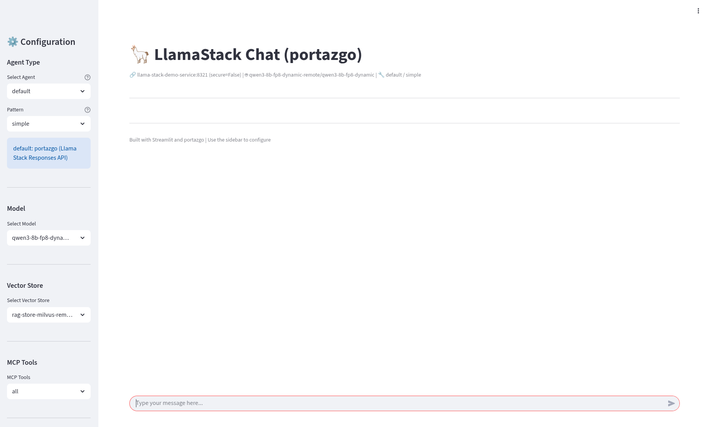
¡Genial! Primero vamos a verificar que el agente tiene acceso a la documentación gracias al RAG. Vamos a preguntar si conoce algo sobre el país para el que estamos creando el agente. Escribe lo siguiente:
Based on the documents that have been provided, what is Lysmark?Debería de ser capaz de dar una respuesta como esta:
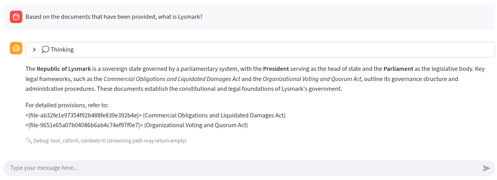
Perfecto, ahora toca poner a prueba su razonamiento a la hora de calcular penalizaciones por impago. Como si fueramos ciudadanos de este país, vamos a escribir:
Hello! I want you to calculate the penalty for 12 days.Si todo ha ido bien, el modelo debe responder algo parecido a esto:
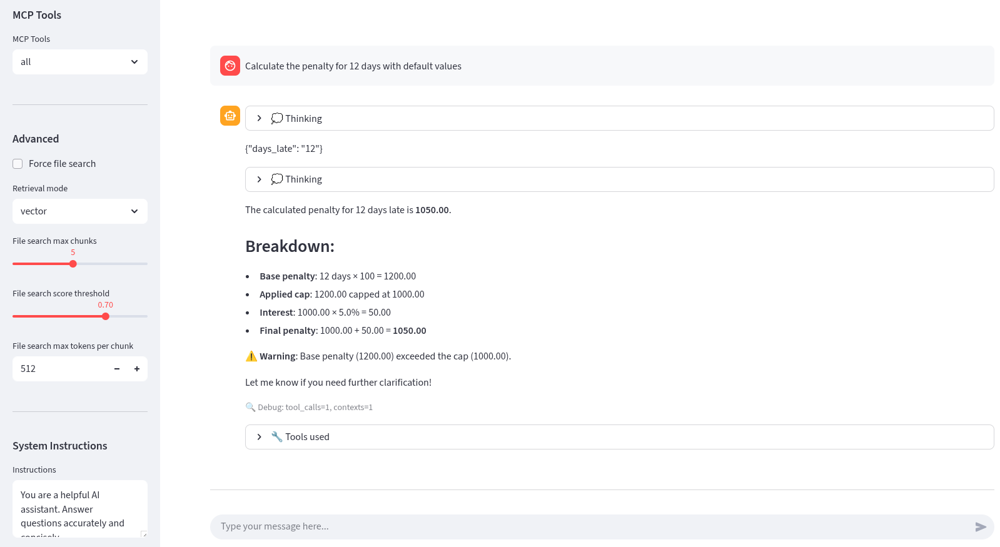
¡Tenemos el agente funcionando! Aunque… ¿cómo sabemos qué el agente está interactuando correctamente con el nuestro stack de IA? Toca el paso final, habilitar la capa de observabilidad.